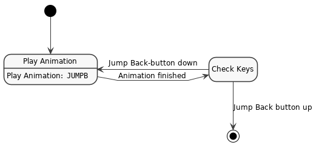
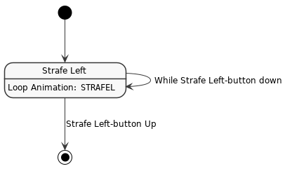
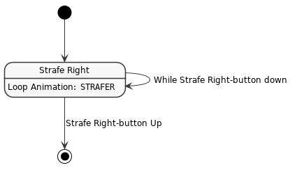

Character state machine¶
Which actions a character can do at what time is decided by the characters state machine. It consists out of a center main state standing and a number of action-states like Fight Left or Run Forward. From the Standing-State, most other states are reached by e.g. pressing a button (e.g. run forward) and are active as long as that button is pressed.
The Standing-State can transition to the following other states:
Run Forward
Jump Backward
Strafe Left
Strafe Right
Draw Weapon
Undraw Weapon
Fight Forward
Fight Left
Fight Right
Fight Block
One of the reasons why a state-machine is needed here is for playing the transition animations: In the original game, the states described here were implicitly coded into the currently active animation of a character. For example, there is an animation for Standing and one for Run Forward. To transition between those, a Transition from Standing to Run Forward-Animation is played. While the transition-animation plays, the character is not supposed to go to other states, so that once the Forward-Button is tapped, you will need to wait for the whole transition animation to finish. This results in the character always taking a step once the forward button is tapped.
Buttons and AI¶
To simplify things, when talking about buttons being pressed, this will also include the AI telling the character to do a certain action. Generally speaking, the AI cannot tell a character anything to do which is not bound to a button. Buttons are easy to understand.
Priorities¶
Special care has to be taken when executing a state in a loop. For example, if you hold the Jump Backward-button and then also press the Run Forward-button, the character should stay in the Jump Backward-state.
States¶
In the following sub-states, the filled black circle denoting the start of the state chart will always be the Standing-state, while the non-filled black circle will always go back to the Standing-state.
Animation naming¶
There are two categories of animations for characters (and usable objects, really), which are State- and Transition-Animations. For most people the State-Animations are the more interesting ones, as they display the character being in a state such as Standing, Running, Standing with 1H-Weapon drawn, and so on. The Transition-Animations are for going from one of such states to another.
State-Animations will be always called like S_<state>, while Transition-Animations are
called T_<from>_2_<to>. Examples for such animations are S_1HRUNL or T_1HRUN_2_1HRUNL.
State Animations¶
The animations named in the following parts are not the complete name of the animation clip. They are rather the type of animation the character should play. The final name is constructed like so:
S_<weaponmode><walkmode><kind>
Where <weaponmode> can be one of:
None: Empty string
1h:
1H2h:
2HBow:
BOWCrossBow:
CBOWMagic:
MAGFist:
FIST
And <walkmode> can be one of:
RUN
WALK
SNEAK
SWIM
JUMP
WATER
DIVE
And <kind> is the animation named in the following state descriptions. For example, the full
animation file name S_RUNL means: No weapon, Running-Walkmode with the animation which lets the
character actually run forward, called L.
Note
We don’t exactly know why the actual Go Forward-Animations are called L, but it seems like the L does indeed stand for Left, since the animation starts with the left foot. In Gothic I there are actually two separate jump animations, one for jumping off the left foot and one for the right foot.
Some trivia: In earlier versions of Gothic I the character would jump with the incorrect foot, as someone mixed up the L and R. @nicode fixed that.
As an other example, the animation file name S_FISTWALKSTRAFEL would be for
fist-fighting, walking and strafing left.
If an animation does not exist, first the one without a weapon mode is tried. If that doesn’t exist
either, the RUN walkmode is used. And if that doesn’t exist either, we’re out of luck and
can’t play any animation.
Translation Animations¶
To display a smooth transition between two state animations, Piranha Bytes created special transition animations for going from one state to another. To construct the name of a transition animation, you will need:
The State the character is currently in
The State the character goes to
The current weapon-mode
Then the name of the transition animation is constructed like so:
T_<weaponmode><from>_2_<weaponmode>.
Note
I don’t think there are transitions between different weapon types as the character would always undraw the other weapon first. However, at the moment I’m not sure whether transitions for Standing to 1H-Weapon Standing exist.
Turning Animations¶
Turning is a bit weird as it can happen not only while standing, but also while running or strafing. However, the turning animations shall only be played while the character is standing. Therefore it makes sense to separate these two functionalities.
Note
Turning needs to be faster when a weapon is drawn. The speedup-factor actually comes from a script value, but I’m not sure which one.
Standing-Substate description¶
The following states can be reached from the Standing-state.
State - Run Forward¶
Once the Run forward-button is pressed while in the Standing-State, the following substate shall be entered:
![!include ../style.iuml
state "Play Transition:\nIdle to Run" as transitionToRun
state "Play Transition:\nRun to Idle" as transitionToIdle
transitionToRun : Play animation: ""RUN_2_RUNL""
Run : Loop animation: ""RUNL""
transitionToIdle : Play animation: ""RUNL_2_RUN""
[*] --> transitionToRun
transitionToRun --> Run : Animation Done
Run --> Run : While Forward-Button down
Run --> transitionToIdle : Run Forward-Button no longer down
transitionToIdle --> [*] : Animation Done](../_images/plantuml-5788fb21aba51b1892e451de5e0566b132fc8378.png)
Fig. 2 Statechart for running forward.¶
While in the Run-State, turning shall be allowed but without playing an animation. Turning Left shall take precedence over turning Right.
State - Jump Backward¶
Once the Jump Backward-button is pressed while in the Standing-State, the following substate shall be entered:

Fig. 3 Statechart for jump backwards.¶
While in the PlayAnimation-State, turning shall be allowed but without playing an animation. Turning Left shall take precedence over turning Right.
State - Strafe Left¶
Once the Strafe Left-button is pressed while in the Standing-State, the following substate shall be entered:

Fig. 4 Statechart for Strafe Left.¶
While in the StrafeLeft-State, turning shall be allowed but without playing an animation. Turning Left shall take precedence over turning Right.
State - Strafe Right¶
Once the Strafe Right-button is pressed while in the Standing-State, the following substate shall be entered:

Fig. 5 Statechart for Strafe Right.¶
While in the StrafeRight-State, turning shall be allowed but without playing an animation. Turning Left shall take precedence over turning Right.
Architecture¶
The character statemachine can be split into the following parts:
Generic state-machine module,
Module constructing animation names,
Actual character state logic (Component),
Character-Visual (Component),
Character-Animation player (Component).